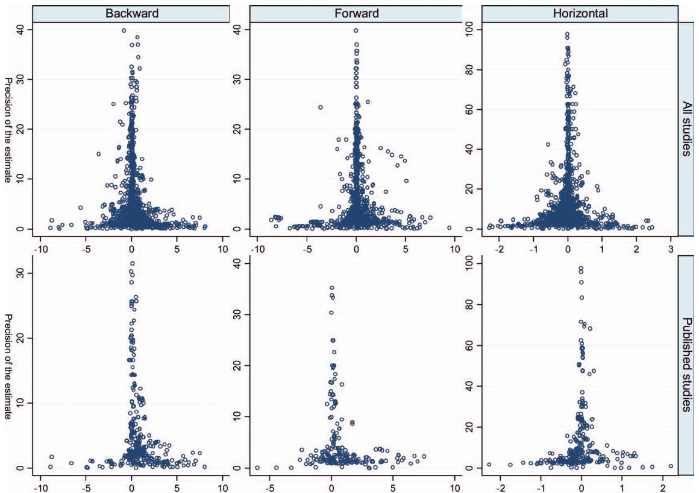

Abstract
In this article we conduct a large quantitative survey of the literature on horizontal and vertical spillovers from foreign direct investment (FDI). We create a unique database of spillover estimates for each country examined in the literature. Next, we estimate the average effect corrected for publication selection bias (the preferential selection of positive and significant estimates for publication). Our results suggest that an average reported estimate of backward spillovers is statistically significant. Publication selection is evident only among studies published in peer-reviewed journals, and only among the estimates that authors consider most important. Authors with small data sets engage in more publication selection. The intensity of selection in the literature decreases over time, which supports the economics-research-cycle hypothesis.

Reference: Tomas Havranek, Zuzana Irsova (2012), "Survey Article: Publication Bias in the Literature on Foreign Direct Investment Spillovers." Journal of Development Studies 48(10): 1375-1396.
Headline result
Publication bias in the FDI spillover literature: publication selection appears only in peer-reviewed journals and only among the estimates authors call most important, and its intensity falls over time, based on 3,626 estimates from 57 studies (Havranek and Irsova 2012, Journal of Development Studies).
How to cite
Tomas Havranek, Zuzana Irsova (2012), "Survey Article: Publication Bias in the Literature on Foreign Direct Investment Spillovers." Journal of Development Studies 48(10): 1375-1396.
BibTeX
@article{havranek2012spillovers,
author = {Tomas Havranek and Zuzana Irsova},
title = {Survey Article: Publication Bias in the Literature on Foreign Direct Investment Spillovers},
journal = {Journal of Development Studies},
year = {2012},
doi = {10.1080/00220388.2012.685721},
}